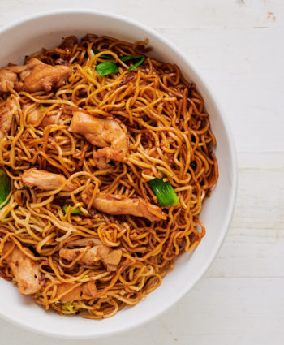

Home
Chow Mein Ramen Noodles

Description
Chow mein is a classic Chinese stir-fried noodle dish with vegetables and your choice of protein, such as chicken, beef, or shrimp. Its savory sauce combines soy and oyster sauce, often with a touch of sesame oil
There are two main styles:crispy chow mein, where noodles are pan-fried for a crunchy texture, and soft chow mein, which keeps noodles tender. Both versions deliver a satisfying mix of flavours and textures, making chow mein a popular favourite dish worldwide
Ingredients
- 8 oz. chow mein noodles
- 1 tbsp vegetable oil
- 1 cub cabbage,shredded
- 1/2 cup carrots, julienned
- 1/2 cup bell pepper, sliced
- 1/2 cup onion, sliced
- 2 green onions, chopped
- 1/2 lb chicken, beef, shrimp, thinly sliced
- 3 tbsp soy sauce
- 1 tbsp oyster sauce
- 1 tsp sesame oil
- Salt and pepper to taste
Method
- Prepare the noodles: Cook noodles according to package instructions. Drain and set aside.
- Cook the protein (if using): In a large pan or wok, heat 1/2 tbsp oil over medium-high heat. Add your protein and cook until browned and fully cooked. Remove from pan and set aside.
- Stir-fry the vegetables: Add remaining oil to the pan, then stir-fry cabbage, carrots, bell pepper, and onion for 2-3 minutes, until slightly tender.
- Combine everything: Add noodles and cooked protein back to the pan. Pour in soy sauce, oyster sauce, and sesame oil. Stir-fry for another 2-3 minutes until everything is well-coated and heated through.
- Garnish and serve: Top with green onions, season to taste, and enjoy!